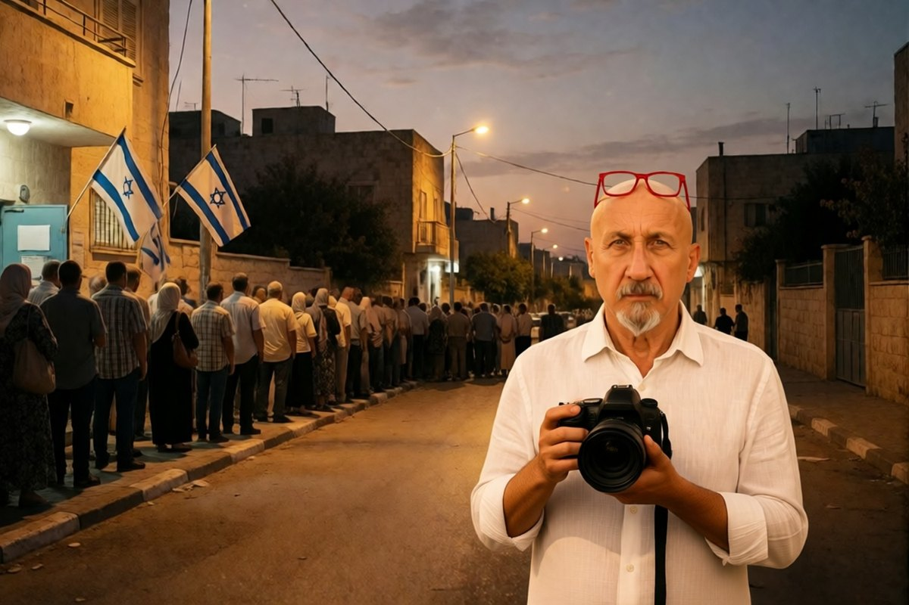

Geopolitica · 30 ottobre 2026
Il voto arabo da record in Israele e il sospetto del denaro straniero

I partiti arabi hanno 19 seggi su 120, il risultato più alto di sempre. Il presidente della Commissione elettorale ha chiesto allo Shin Bet di verificare sospetti di interferenza straniera.
di Franco Zanghì
I partiti arabi non avevano mai avuto tanti seggi in Israele: 19 su 120. E adesso proprio su quel voto lavora lo Shin Bet, il servizio di sicurezza interna, per capire se dietro l'affluenza ci sia denaro arrivato dall'estero.
Martedì in Israele si è votato, e il risultato è un parlamento senza maggioranza. Il blocco di Netanyahu ha 53 seggi, l'opposizione guidata da Gadi Eisenkot ne ha 48, e per governare ne servono 61. In mezzo ci sono la Lista Comune e Ra'am di Mansour Abbas, con 19 seggi: quattro in più del record precedente, quello del 2020.
L'affluenza e il tabù rotto
L'affluenza è stata la più alta dal 1999, e nelle città arabe è salita moltissimo. A Umm al Fahm, secondo i dati della sera del voto, è passata da meno del 40 al 70 per cento; a Rahat, la città beduina del Negev, ha sfiorato l'80. E c'è un dato che il quotidiano Haaretz chiama la rottura di un tabù: a Gerusalemme Est hanno votato oltre 10.000 palestinesi, il triplo dell'ultima volta, il numero più alto da quando Israele ha annesso la parte orientale della città, nel 1967.
Il sospetto
Poi è arrivato il sospetto. Il Likud accusa i partiti arabi di aver rubato le elezioni. Ma il passo che pesa è un altro: il presidente della Commissione elettorale centrale, il giudice della Corte Suprema Noam Sohlberg, ha scritto al capo dello Shin Bet, David Zini, e gli ha chiesto di verificare gravi sospetti di interferenza straniera, con una risposta entro una settimana.
Secondo i media israeliani si guarda a fondi che sarebbero arrivati dal Qatar, forse anche attraverso la Turchia, per spingere l'affluenza araba. Sohlberg però ha messo per iscritto di non poter attestare la sostanza di quei sospetti, e una fonte della polizia citata dal Times of Israel dice che il giorno del voto è passato con pochissime irregolarità. Dal Qatar, alla data di pubblicazione, non risulta nessuna risposta.
Perché riguarda anche l'Italia
Perché il Qatar è il mediatore di quasi tutte le trattative della regione, da Gaza all'Iran, e un'accusa di interferenza nel voto israeliano peserebbe su quel ruolo. E perché dal prossimo governo israeliano dipende la partita con l'Iran, che riguarda il gas e il petrolio che arrivano anche da noi.
Che cosa dicono gli analisti
Per Dahlia Scheindlin, analista di Haaretz, i partiti arabi sono ormai una forza politica con cui fare i conti. Arik Rudnitzky, dell'Israel Democracy Institute, spiega che oggi fra l'85 e il 90 per cento degli elettori arabi sceglie partiti arabi, e avverte che in politica nessun sostegno è gratis. Per Yohanan Plesner, presidente dello stesso istituto, un governo di minoranza sostenuto dall'esterno dai partiti arabi sta in piedi sui numeri, ma l'opinione pubblica israeliana non è pronta.
La lettura di chi scrive è questa: un sospetto serio va indagato fino in fondo, e la Commissione ha fatto bene a chiederlo. Ma finché non c'è una prova, un voto alto resta un voto alto.
Da guardare adesso: la risposta dello Shin Bet, attesa entro la settimana prossima, e i risultati ufficiali. Se emergono prove, la partita del governo si riapre; se non emergono, le accuse resteranno una mossa politica, e i 19 seggi arabi diventeranno il centro delle trattative.
Fonti
- The Times of Israel, «Election committee chief instructs Shin Bet to probe suspicion of foreign influence on vote», 29 ottobre 2026
- Globes, «Shin Bet to probe alleged Qatari interference in elections», 29 ottobre 2026
- Il Fatto Quotidiano, «Voto in Israele, la Commissione elettorale chiede un'inchiesta su presunte interferenze del Qatar», 29 ottobre 2026
- Adnkronos, «Israele, Netanyahu senza maggioranza. Commissione elettorale: non ci sono elementi», 29 ottobre 2026
- Haaretz, «Breaking a decades-old taboo, East Jerusalem Palestinians turn out in force», 28 ottobre 2026
- Ynet, dati di affluenza delle ore 20 del 27 ottobre 2026, e Al Jazeera, affluenza al 77,7 per cento
- Fox News (Amelie Botbol), dichiarazioni di Dahlia Scheindlin e Arik Rudnitzky, 29 ottobre 2026; The Times of Israel (Ruth Eglash), dichiarazioni di Yohanan Plesner, 28 ottobre 2026
I risultati non erano ancora definitivi alla data di pubblicazione. Il dato su Gerusalemme Est è riportato dal solo Haaretz. Dei finanziamenti esteri non esiste alcuna prova: il presidente della Commissione elettorale scrive di non poterne attestare la sostanza.